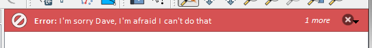
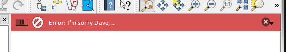
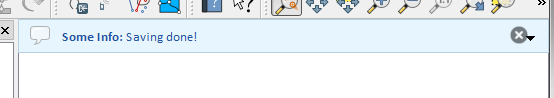
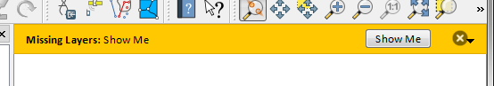
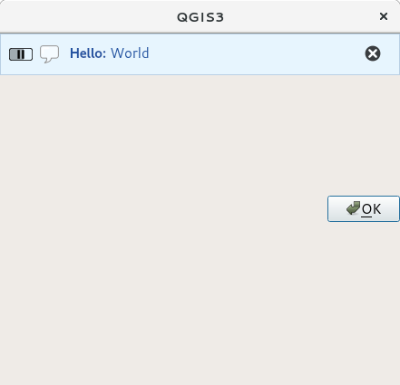

13 与用户通信
本节代码片段需导入以下模块：
1
2
3
4
5
6
7
8
9
10
11
12
13
14
15
16 from qgis.core import (
QgsMessageLog ,
QgsGeometry ,
)
from qgis.gui import (
QgsMessageBar ,
)
from qgis.PyQt.QtWidgets import (
QSizePolicy ,
QPushButton ,
QDialog ,
QGridLayout ,
QDialogButtonBox ,
)
本节介绍用于与用户通信的一些方法和元素，以保持用户接口的一致性。
13.1 显示消息——QgsMessageBar
从用户体验的角度来看，使用消息框可能是个坏主意。为了显示一小行信息或警告/错误消息，QGIS消息栏通常是更好的选择。
使用QGIS接口对象的引用，你可以使用以下代码在消息栏中显示消息
from qgis.core import Qgis
iface . messageBar () . pushMessage ( "Error" , "I'm sorry Dave, I'm afraid I can't do that" , level = Qgis . Critical )

QGIS消息栏
你可以设置持续时间，在有限时间内显示它
iface . messageBar () . pushMessage ( "Ooops" , "The plugin is not working as it should" , level = Qgis . Critical , duration = 3 )

带定时器的QGIS消息栏
上面的示例显示了错误栏，但level参数可用于创建警告消息或正常消息——使用Qgis.MessageLevel
Info
Warning
Critical
Success

QGIS消息栏（info）
控件可以添加到消息栏中，例如用于显示更多信息的按钮
def showError ():
pass
widget = iface . messageBar () . createMessage ( "Missing Layers" , "Show Me" )
button = QPushButton ( widget )
button . setText ( "Show Me" )
button . pressed . connect ( showError )
widget . layout () . addWidget ( button )
iface . messageBar () . pushWidget ( widget , Qgis . Warning )

带有按钮的QGIS消息栏
你甚至可以在自己的对话框中使用消息栏，这样就不必显示消息框，或者在主QGIS窗口中显示消息时没有意义
1
2
3
4
5
6
7
8
9
10
11
12
13
14
15
16 class MyDialog ( QDialog ):
def __init__ ( self ):
QDialog . __init__ ( self )
self . bar = QgsMessageBar ()
self . bar . setSizePolicy ( QSizePolicy . Minimum , QSizePolicy . Fixed )
self . setLayout ( QGridLayout ())
self . layout () . setContentsMargins ( 0 , 0 , 0 , 0 )
self . buttonbox = QDialogButtonBox ( QDialogButtonBox . Ok )
self . buttonbox . accepted . connect ( self . run )
self . layout () . addWidget ( self . buttonbox , 0 , 0 , 2 , 1 )
self . layout () . addWidget ( self . bar , 0 , 0 , 1 , 1 )
def run ( self ):
self . bar . pushMessage ( "Hello" , "World" , level = Qgis . Info )
myDlg = MyDialog ()
myDlg . show ()

自定义对话框中的QGIS消息栏
13.2 显示进度条
进度条也可以放在QGIS消息栏中，正如我们所见，它接受控件。以下是你可以在控制台中尝试的示例：
1
2
3
4
5
6
7
8
9
10
11
12
13
14
15 import time
from qgis.PyQt.QtWidgets import QProgressBar
from qgis.PyQt.QtCore import *
progressMessageBar = iface . messageBar () . createMessage ( "Doing something boring..." )
progress = QProgressBar ()
progress . setMaximum ( 10 )
progress . setAlignment ( Qt . AlignLeft | Qt . AlignVCenter )
progressMessageBar . layout () . addWidget ( progress )
iface . messageBar () . pushWidget ( progressMessageBar , Qgis . Info )
for i in range ( 10 ):
time . sleep ( 1 )
progress . setValue ( i + 1 )
iface . messageBar () . clearWidgets ()
此外，你可以使用内置状态栏报告进度，如下示例所示：
1
2
3
4
5
6
7
8
9
10
11
12
13
14 vlayer = iface . activeLayer ()
count = vlayer . featureCount ()
features = vlayer . getFeatures ()
for i , feature in enumerate ( features ):
# 做一些耗时任务
print ( '' ) # 给予足够的时间来打印进度
percent = i / float ( count ) * 100
# iface.mainWindow().statusBar().showMessage("Processed {} %".format(int(percent)))
iface . statusBarIface () . showMessage ( "Processed {} %" . format ( int ( percent )))
iface . statusBarIface () . clearMessage ()
13.3 日志
QGIS有三种不同类型的日志记录，记录和保存有关代码执行的所有信息。每种类型都有特定的输出位置。请考虑使用正确的日志记录方式：
QgsMessageLogPython的**logging**模块用于调试QGIS Python API（PyQGIS）。建议Python开发人员使用其调试代码，例如，要素的id或者几何。
QgsLogger
不同日志记录类型的示例如下所示。
警告
在多线程的代码中使用Python print语句是不安全的，并且很大程度降低算法的速度。包括函数表达式，渲染器，符号层和处理算法（等等）。在这些情况下，你应该始终使用Python **logging**模块或线程安全类（QgsLoggerQgsMessageLog
13.3.1 QgsMessageLog
# 你可以选择传递'tag'和'level'参数
QgsMessageLog . logMessage ( "Your plugin code has been executed correctly" , 'MyPlugin' , level = Qgis . Info )
QgsMessageLog . logMessage ( "Your plugin code might have some problems" , level = Qgis . Warning )
QgsMessageLog . logMessage ( "Your plugin code has crashed!" , level = Qgis . Critical )
13.3.2 python logging模块
import logging
formatter = ' %(asctime)s - %(name)s - %(levelname)s - %(message)s '
logfilename = r 'c:\temp\example.log'
logging . basicConfig ( filename = logfilename , level = logging . DEBUG , format = formatter )
logging . info ( "This logging info text goes into the file" )
logging . debug ( "This logging debug text goes into the file as well" )
# 2020-10-08 13:14:42,998 - root - INFO - This logging text goes into the file
# 2020-10-08 13:14:42,998 - root - DEBUG - This logging debug text goes into the file as well
basicConfig方法配置日志记录的基本设置。在上面的代码中，定义了文件名，日志记录级别和格式。文件名指的是将日志文件写入的位置，日志记录级别定义输出的级别，格式定义输出每个消息的格式。
如果你想要每次在执行脚本时删除日志文件，你可以执行以下操作：
if os . path . isfile ( logfilename ):
with open ( logfilename , 'w' ) as file :
pass
如何使用如何使用Python日志记录工具的更多资源：
警告
请注意，如果不设置日志文件，日志可能是多线程的，这会严重减慢输出速度